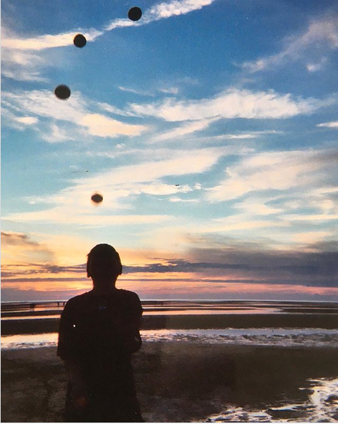

Home
Projects
Under development
Other
Photos
Juggling along the Beartooth highway, 2020
p.s. If you are interested in
siteswap
I have a notebook for visualizing vanilla siteswaps
here
.
On the snake river near Pullman
 Juggling near Eastham, MA, 2003
 On the snake river near Pullman
On the snake river near Pullman